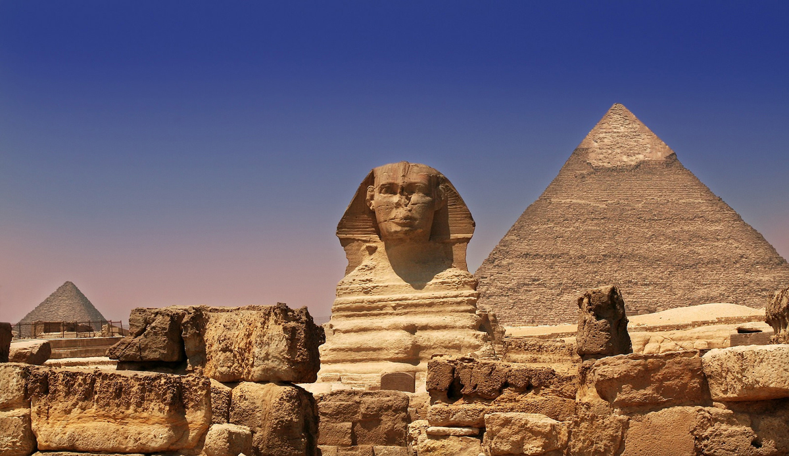

×

Egypt
Климат
Жаркий тропический (юг и Красное море) и субтропический (средиземноморское побережье) континентальный. Летом (май-сентябрь) температура воздуха составляет +35-40ºС, зимой (декабрь-февраль) +20-25ºС. Самый холодный месяц - январь. Для всей территории Египта характерны большие суточные колебания температуры воздуха - в январе-феврале днем столбик термометра может подниматься до +29ºС, а ночью опускаться до 0ºС и даже ниже (последнее характерно для пустынных районов).
В зимний и весенний периоды часто дуют сухие горячие ветры "хамсин", температура в этот период может повышаться до +40-45ºС, а влажность падает до 10% и ниже. Периодически случаются сильные песчаные бури.
Средняя температура воды в феврале составляет около +25ºС в Красном море и около +18ºС - в Средиземном. При этом в прибрежных районах юго-востока летом вода может прогреваться до весьма некомфортных температур - до +34ºС и выше.
____